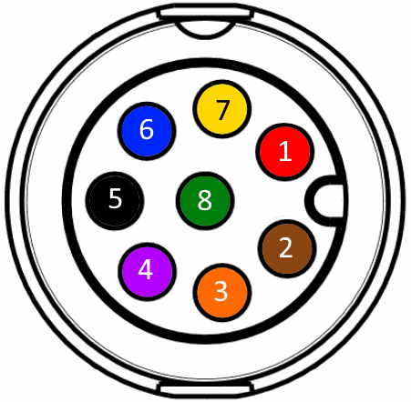
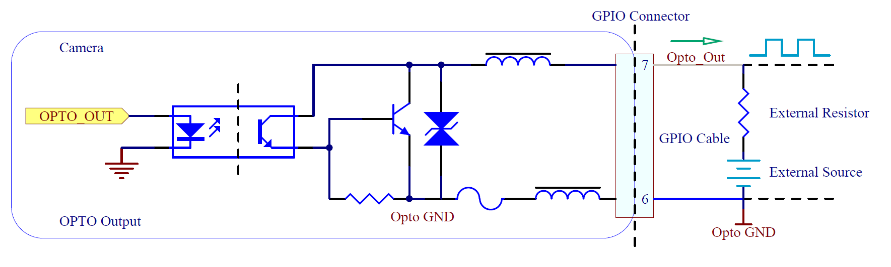
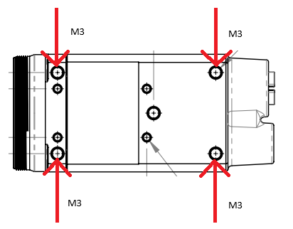

Camera Specifications¶
Contents
Power¶
The TRI054S can be powered via the Ethernet cable using Power over Ethernet (PoE) or the GPIO using the pins described in the GPIO Characteristics section.
When using PoE, the power supply must comply with the IEEE 802.3af standard. You can find recommended parts to power the camera in our web store.
Temperature¶
The TRI054S should be kept in the following storage, operating, and humidity conditions.
| Storage Temperature | -30 to 60°C |
| Operating Temperature | -20 to 55°C ambient |
| Humidity | Operating: 20% ~ 80%, relative, non-condensing |
Placing the camera outside of these conditions may result in damage to the device.
The TRI054S is equipped with a built-in temperature sensor that can be read by reading the DeviceTemperature property.
| The camera can get hot to touch if it has been streaming images for an extended period of time. |
| DeviceTemperature can show values outside of the operating temperature range. This is generally acceptable as long as the camera is kept within the stated operating temperature range. |
GPIO Characteristics¶
GPIO Pinout Diagram
GPIO connector as seen from rear TRI054S view. Pin colors correspond to GPIO-M8 cable from Lucid Vision Labs.
| Pin Number | Pin Description |
|---|---|
| 1 (Red) | VAUX (12-24V DC Power Input) |
| 2 (Brown) | Non-isolated bi-directional GPIO channel (Line 2) |
| 3 (Orange) | VDD GPIO (2.5V Power Output) (Line 4) |
| 4 (Purple) | Non-isolated bi-directional GPIO channel (Line 3) |
| 5 (Black) | GND (Camera GND) |
| 6 (Blue) | OPTO GND (Opto-isolated Reference) |
| 7 (Yellow) | OPTO OUT (Opto-isolated Output) (Line 1) |
| 8 (Green) | OPTO IN (Opto-isolated Input) (Line 0) |
Consult the Turning on GPIO Voltage Output section for enabling VDD.
GPIO Schematics¶
Opto-isolated Input – GPIO Line 0¶

Opto-isolated Input Measurements:
| Voltage (V) | Max Rise Delay (us) | Max Fall Delay (us) | Max Rise Time (us) | Max Fall Time (us) | Min Pulse Input (us) | Min Input High (V) | Min Input Low (V) |
|---|---|---|---|---|---|---|---|
| 2.5 | 1 | 1 | 1 | 1 | 2 | 2.5 | 1.0 |
| 5 | 1 | 1 | 1 | 1 | 2 | 2.5 | 1.0 |
Sample values measured at room temperature. Results may vary over temperature and setup.
Opto-isolated Output – GPIO Line 1¶
Opto-isolated Output Measurements:
| Voltage (V) | External Resistor (Ω) | Max Rise Delay (us) | Max Fall Delay (us) | Max Rise Time (us) | Max Fall Time (us) | Current (mA) | Low Level (V) |
|---|---|---|---|---|---|---|---|
| 2.5 | 150 | 50 | 5 | 40 | 5 | 5.7 | 0.9 |
| 2.5 | 330 | 50 | 5 | 40 | 5 | 2.9 | 0.8 |
| 2.5 | 560 | 50 | 5 | 40 | 5 | 1.9 | 0.5 |
| 2.5 | 1k | 50 | 5 | 40 | 5 | 1.2 | 0.3 |
| 5 | 330 | 50 | 5 | 50 | 5 | 6.6 | 0.9 |
| 5 | 560 | 50 | 5 | 50 | 5 | 4 | 0.7 |
| 5 | 1k | 50 | 5 | 50 | 5 | 2.4 | 0.5 |
| 5 | 1.8k | 50 | 5 | 50 | 5 | 1.4 | 0.4 |
| 12 | 1k | 50 | 5 | 60 | 5 | 6 | 0.9 |
| 12 | 1.8k | 50 | 5 | 60 | 5 | 3.4 | 0.9 |
| 12 | 2.7k | 50 | 5 | 60 | 5 | 2.4 | 0.7 |
| 12 | 4.7k | 50 | 5 | 60 | 5 | 1.5 | 0.5 |
| 24 | 1.8k | 60 | 5 | 60 | 5 | 7.1 | 0.9 |
| 24 | 2.7k | 60 | 5 | 60 | 5 | 4.7 | 0.9 |
| 24 | 4.7k | 60 | 5 | 60 | 5 | 2.8 | 0.7 |
| 24 | 6.8k | 60 | 5 | 60 | 5 | 2.1 | 0.6 |
Sample values measured at room temperature. Results may vary over temperature and setup.
Non-isolated Input - GPIO Line 2¶

Non-isolated Input Measurements:
| Voltage (V) | Max Rise Delay (us) | Max Fall Delay (us) | Max Rise Time (us) | Max Fall Time (us) | Min Pulse Input (us) | Min Input High (V) | Min Input Low (V) |
|---|---|---|---|---|---|---|---|
| 2.5 | 1 | 1 | 1 | 1 | 2 | 2.5 | 0.5 |
| 5 | 1 | 1 | 1 | 1 | 2 | 2.5 | 0.5 |
Typical values measured at room temperature. Results may vary over temperature.
Non-isolated Output - GPIO Line 2¶

Non-isolated Output Measurements:
| Voltage (V) | External Resistor (Ω) | Max Rise Delay (us) | Max Fall Delay (us) | Max Rise Time (us) | Max Fall Time (us) | Current (mA) | Low Level (V) |
|---|---|---|---|---|---|---|---|
| 2.5 | 150 | 0.5 | 0.5 | 1 | 0.5 | 4.3 | 1.3 |
| 2.5 | 330 | 0.5 | 0.5 | 1 | 0.5 | 2.6 | 1 |
| 2.5 | 560 | 0.5 | 0.5 | 1 | 0.5 | 1.8 | 0.8 |
| 2.5 | 1k | 0.5 | 0.5 | 1 | 0.5 | 1.1 | 0.6 |
| 5 | 330 | 0.5 | 0.5 | 1 | 0.5 | 5.6 | 1.4 |
| 5 | 560 | 0.5 | 0.5 | 1 | 0.5 | 3.7 | 1.1 |
| 5 | 1k | 0.5 | 0.5 | 1 | 0.5 | 2.3 | 0.9 |
| 5 | 1.8k | 0.5 | 0.5 | 1 | 0.5 | 1.4 | 0.7 |
| 12 | 1k | 0.5 | 0.5 | 1 | 0.5 | 5.5 | 1.4 |
| 12 | 1.8k | 0.5 | 0.5 | 1 | 0.5 | 3.2 | 0.9 |
| 12 | 2.7k | 0.5 | 0.5 | 1 | 0.5 | 2.3 | 0.9 |
| 12 | 4.7k | 0.5 | 0.5 | 1 | 0.5 | 1.5 | 0.7 |
| 24 | 1.8k | 0.5 | 0.5 | 2 | 0.5 | 6.5 | 1.6 |
| 24 | 2.7k | 0.5 | 0.5 | 2 | 0.5 | 4.5 | 1.3 |
| 24 | 4.7k | 0.5 | 0.5 | 2 | 0.5 | 2.6 | 0.9 |
| 24 | 6.8k | 0.5 | 0.5 | 2 | 0.5 | 1.8 | 0.8 |
Typical values measured at room temperature. Results may vary over temperature.
Non-isolated Input - GPIO Line 3¶
Same as Non-isolated Input – GPIO Line 2 (GPIO_IN is Pin 4, GND is Pin 5)
Non-isolated Output - GPIO Line 3¶
Same as Non-isolated Output – GPIO Line 2 (GPIO_OUT is Pin 4, GND is Pin 5)

{kind=link}
{kind=link}
LED Status¶
The TRI054S camera is equipped with an LED that identifies the current state of the camera.
| LED Status | Status Information |
|---|---|
| Flashing red | Camera powered, but no Ethernet link established. |
| Flashing green | Camera powered, Ethernet link established, but no network traffic. |
| Solid green | Camera powered, Ethernet link established, and there is network traffic. |
| Flashing red/green | Firmware update in progress. |
| Solid red | Error. Firmware update failed. |
The following LED sequence occurs when the camera is powered up and connected to a network:
- LED off, plug in the Ethernet cable.
- LED on, flashing red.
- After link is established, LED becomes flashing green.
- Launch application and start capturing images, LED becomes solid green.
The status LED can also be controlled using the DeviceIndicatorMode property. Possible values are:
- Inactive: LED is off.
- Active: LED indicates camera status according to the above table.
IR Filter¶
Color cameras from Lucid Vision Labs are equipped with an IR filter that is installed under the gasket of the mount. Mono cameras are equipped with a transparent glass window instead of an IR filter. The dimensions of the IR filter / transparent glass window are as follows:
| Model | Size | Thickness |
|---|---|---|
| 29 x 29mm Triton C-Mount | 18 x 14.5mm | 1mm |
The IR filter and transparent glass window have anti-reflective coating on one side.
Shock and Vibration¶
To ensure the camera’s stability, LUCID’s TRI054S camera is tested under the following shock/vibration conditions. After the testing, the camera showed no physical damage and could produce normal images during normal operation.
| Test | Standard | Parameters |
|---|---|---|
| Shock | DIN EN 60068-2-27 | Each axis (x/y/z), 20g, 11ms, +/- 10 shocks |
| Bump | DIN EN 60068-2-27 | Each axis (x/y/z), 20g, 11ms, +/- 100 bumps |
| Vibration (random) | DIN EN 60068-2-27 | Each axis (x/y/z), 4.9g rms, 15-500Hz, 0.05g2/Hz acceleration, 30min per axis |
| Vibration (sinusoidal) | DIN EN 60068-2-6 | Each axis (x/y/z), 10-58Hz: 1.5mm, 58-500 Hz: 10g, 1 oct/min, 1 hour 52 min per axis |
During the test, the Triton camera was mounted by securing the four M3 mounting holes on the bottom of the camera as illustrated below.
To mimic a real camera usage scenario, a dummy lens mass is attached to the camera lens mount during the shock and vibration test. The dummy lens has the following properties.
| Mass | 66 grams |
| Center of mass from C-mount | 16 mm |
An IP67 lens tube (LUCID Part Number: IPTC-D355L599) was then installed outside of the lens mass.
Specification Tests¶
FCC¶
This product has been tested and complies with the limits for a Class A digital device, pursuant to Part 15 of the FCC Rules. These limits are designed to provide reasonable protection against harmful interference when the equipment is operated in a commercial environment. This equipment generates, uses, and can radiate radio frequency energy and, if not installed and used in accordance with the instruction manual, may cause harmful interference to radio communications. Operation of this equipment in a residential area is likely to cause harmful interference, in which case the user will be required to correct the interference at his own expense.
Users are advised that any changes or modifications not approved by Lucid Vision Labs will void the FCC compliance. The product is intended to be used as a component of a larger system, hence users are advised that cable and other peripherals may affect overall system FCC compliance.
RoHS, REACH, and WEEE¶
Lucid Vision Labs declares the TRI054S camera is in conformity of the following directives:
- RoHS 2015/863/EU
- REACH 1907/2006/EC
- WEEE 2012/19/EC
CE¶
Lucid Vision Labs declares the TRI054S meets requirements necessary for CE marking. The product complies with the requirements of the listed directives below:
- EN 55032:2012 Electromagnetic compatibility of multimedia equipment - Emission requirements
- EN 61000-3-2:2014 Harmonic Current Emissions
- EN 61000-3-3:2013 Voltage Fluctuations and Flicker
- EN 61000-4-2:2008 Electrostatic Discharge
- EN 61000-4-3:2010 Radiated RF Immunity
- EN 61000-4-4:2012 Electrical Fast Transient/Burst
- EN 61000-4-5:2014 Surge Transient
- EN 61000-4-6:2013 Conducted Immunity
- EN 61000-4-8:2009 Power Frequency Magnetic Field
- EN 61000-4-11:2004 Voltage Dips and Interruptions